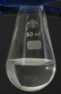

nitric-acid

Definition: Nitric acid is the inorganic compound with the formula HNO3. It is a highly corrosive mineral acid. The compound is colorless, but older samples tend to be yellow cast due to decomposition into oxides of nitrogen. Most commercially available nitric acid has a concentration of 68% in water. When the solution contains more than 86% HNO3, it is referred to as fuming nitric acid. Depending on the amount of nitrogen dioxide present, fuming nitric acid is further characterized as red fuming nitric acid at concentrations above 86%, or white fuming nitric acid at concentrations above 95%.
Source: Wikipedia
Wikipedia Page (Something wrong with this association? Let us know.)
Wikidata Page (Something wrong with this association? Let us know.)